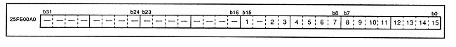

Figure 3.21 shows the details of the interrupt mask register. When the register value is 0, interrupts are not masked. When it is 1, interrupts are masked.
Figure 3.21 Interrupt mask register (register: IMS) Initial value 0000BFFFH

A-Bus interrupt mask bit (1 [bit 15] in Figure 3.21) IMS15 (W) Interrupt MaSk bit bit15
Specifies whether to mask A-Bus interrupts.
Sprite rendering end interrupt mask bit (2 [bit 13] in Figure 3.21) IMS13 (W) Interrupt MaSk bit bit13
Specifies whether to mask the sprite drawing end interrupt.
DMA illegal interrupt mask bit (3 [bit 12] in Figure 3.21) IMS12 (W) Interrupt MaSk bit bit12
Specifies whether to mask DMA illegal interrupts.
Level 0-DMA end interrupt mask bit (4 [bit 11] in Figure 3.21) IMS11 (W) Interrupt MaSk bit bit11
Specifies whether to mask level 0-DMA end interrupts.
Level 1-DMA end interrupt mask bit (5 [bit 10] in Figure 3.21) IMS10 (W) Interrupt MaSk bit bit10
Specifies whether to mask level 1-DMA end interrupts.
Level 2-DMA end interrupt mask bit (6 [bit 9] in Figure 3.21) IMS9 (W) Interrupt MaSk bit bit9
Specifies whether to mask level 2-DMA end interrupts.
PAD interrupt mask bit (7 [bit 8] in Figure 3.21) IMS8 (W) Interrupt MaSk bit bit8
Specify whether to mask interrupts from PAD.
System manager interrupt mask bit (8 [bit 7] in Figure 3.21) IMS7 (W) Interrupt MaSk bit bit7
Specify whether to mask interrupts from the system manager.
Sound request interrupt mask bit (9 [bit 6] in Figure 3.21) IMS6 (W) Interrupt MaSk bit bit6
Specifies whether to mask sound request interrupts.